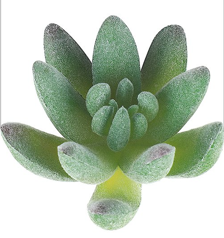

<!--menu slide top --> 
<div id="myNav" class="overlay">
        <a href="javascript:void(0)" class="closebtn" onclick="closeNav()">&times;</a>
        <div class="overlay-content">
            <a href="index.html">M.LaMont Page</a>
                <center></center >
            <a href="home.html">CIT 261 Home</a>
            <a href="reflect.html">Relections</a>
            
            <a style="font-size: 20px" href="topic1.html">Topic 01</a>
            <a style="font-size: 20px" href="topic2.html">Topic 02</a>
            <a style="font-size: 20px" href="topic3.html">Topic 03</a>
            <a style="font-size: 20px" href="topic4.html">Topic 04</a>
            <a style="font-size: 20px" href="topic5.html">Topic 05</a>
            <a style="font-size: 20px" href="topic6.html">Topic 06</a>
            <a style="font-size: 20px" href="topic7.html">Topic 07</a>
            <a style="font-size: 20px" href="topic8.html">Topic 08</a>
            <a style="font-size: 20px" href="topic9.html">Topic 09</a>
            <a style="font-size: 20px" href="topic10.html">Topic 10</a>
            <a style="font-size: 20px" href="topic11.html">Topic 11</a>
            <a style="font-size: 20px" href="topic12.html">Topic 12</a>
            <a style="font-size: 20px" href="topic13.html">Topic 13</a>
        </div>
    </div>
    <div style="float: right;"><span style="font-size:30px;cursor:pointer;" onclick="openNav()">&#9776; </span></div>


    <!--NOTE: to use this file:  grab the 3 scripts from... 
        any topic, add the placeholder div, and paste over the syles from the top of the file
    UPDATE LATER
    -->